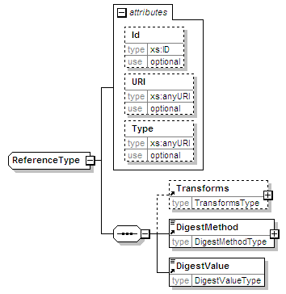

| diagram |  | ||||||||||||||||||||||||
| namespace | urn:oasis:names:tc:evs:schema:eml:ts | ||||||||||||||||||||||||
| children | Transforms DigestMethod DigestValue | ||||||||||||||||||||||||
| used by |
|
||||||||||||||||||||||||
| attributes |
|
||||||||||||||||||||||||
| source | <xs:complexType name="ReferenceType"> <xs:sequence> <xs:element ref="Transforms" minOccurs="0"/> <xs:element ref="DigestMethod"/> <xs:element ref="DigestValue"/> </xs:sequence> <xs:attribute name="Id" type="xs:ID" use="optional"/> <xs:attribute name="URI" type="xs:anyURI" use="optional"/> <xs:attribute name="Type" type="xs:anyURI" use="optional"/> </xs:complexType> |
| type | xs:ID | ||||
| properties |
|
||||
| source | <xs:attribute name="Id" type="xs:ID" use="optional"/> |
| type | xs:anyURI | ||||
| properties |
|
||||
| source | <xs:attribute name="URI" type="xs:anyURI" use="optional"/> |
| type | xs:anyURI | ||||
| properties |
|
||||
| source | <xs:attribute name="Type" type="xs:anyURI" use="optional"/> |